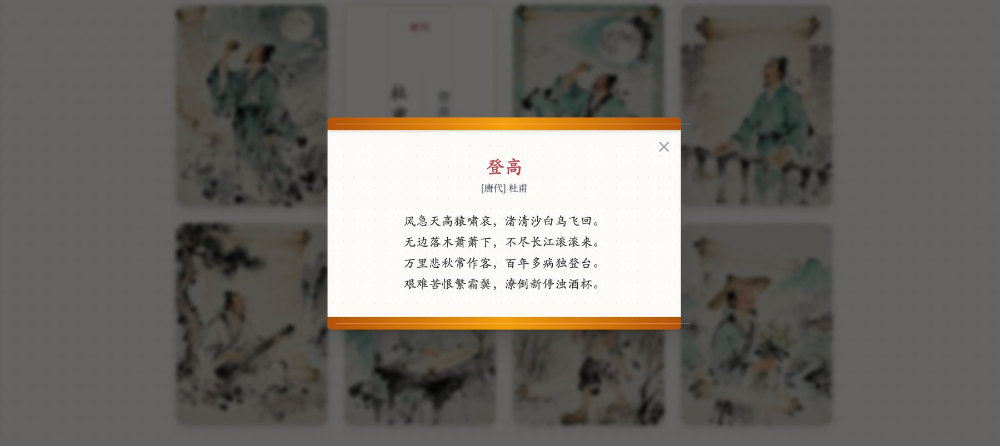

场景一语文学科古诗意境沉浸课
适用内容：小学古诗教学（如《小池》《望庐山瀑布》《江南春》等）1
入境3 分钟
三面墙缓缓呈现古诗的意境——泉水、细流、树荫、小荷、蜻蜓……学生仿佛站在池塘边。老师诵读诗句，画面随诗句变化。
2
品读10 分钟
老师引导学生观察画面中的景物，对照诗句理解词义。点击画面中的景物，会出现对应的诗句和解释。
3
体验10 分钟
学生可以「走进」画面——拖拽蜻蜓到荷叶上，拨动水面泛起涟漪，感受诗中的动态美。
4
表达7 分钟
学生用自己的话描述诗中的画面，或者尝试仿写诗句。
教育价值
古诗教学的难点在于「意境」——学生很难通过文字想象出诗中的画面。沉浸式空间让学生「走进」诗里，用眼睛看、用身体感受，真正理解什么是「诗中有画，画中有诗」。